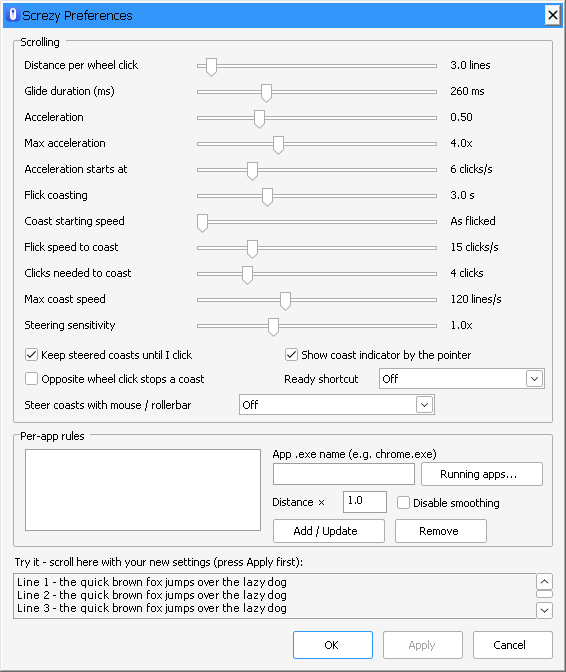

Screzy
Scroll easy. Flick to coast. Steer with mouse or rollerbar.
Easy, smooth mouse-wheel scrolling for every Windows app.
Free and open source · No internet, no tracking · Windows 10 and 11
Scrolling
A normal wheel moves the page in instant jumps. Screzy spreads each click over a short, eased glide, timed to your screen's refresh rate. The curves below show scrolling speed over time.
Each click glides
Instead of an instant jump (dotted), each click eases in and out. Clicks in a row blend into one steady movement.
Spin faster, go further
Roll quickly and each click covers more ground, so long pages fly by. Slow, careful scrolling stays precise.
Flick, and it coasts
Flick the wheel and let go: the page keeps moving and slowly runs down, like on a phone. Wheel clicks speed it up or slow it down while it coasts. A click stops it without clicking anything underneath.
Features
Screzy lives in the tray and does one thing: make the wheel feel good. Everything else is left as it was.
-
Per-app rules
Give an app its own scroll distance, or turn smoothing off for it, handy for games.
-
Touchpads left alone
Touchpads, high-resolution wheels, Ctrl + wheel zoom and sideways scrolling work as before.
-
Light and quiet
Lives in the tray and uses no CPU while you're not scrolling. The icon turns grey when smoothing is off.
-
Steer a coast
Wheel clicks speed a coast up or slow it down, and it holds that speed for hands-free reading. Set a top speed, or let it run until you click.
-
Autoscroll
Optional: a flick starts autoscroll. Move the pointer down or up to scroll, further to go faster, until you click. A RollerMouse bar steers it too.
-
Badge by the pointer
In autoscroll, a small badge marks the start point and shows which way the page is going.
-
Private
Never connects to the internet. No accounts, ads or analytics. Settings stay in one file on your PC. Privacy statement
-
Open source
Plain C with no dependencies, under the MIT License. Read the code or build it yourself. Source on GitHub
Customize
Set how far each click scrolls, how long a glide lasts, how strongly it accelerates, and how far and how fast a flick coasts. Good defaults out of the box, and one clear window to fine-tune. A test area lets you feel each change before you keep it.
For the smoothest result
Set Windows' Lines to scroll at a time to 1 (Settings → Bluetooth & devices → Mouse), or 3 if you prefer, then adjust the distance in Screzy. High Windows values turn small glide steps into visible jumps.

FAQ
Which version should I get, the Store or the .exe?
The Microsoft Store version is the easiest. It updates by itself and Windows shows no warnings. The .exe is a single file you can run from anywhere, with nothing to install. Windows may warn about it the first time, because it isn't code-signed: choose More info, then Run anyway. You download new versions of the .exe yourself.
Where did Microsoft.Services.Store.winmd come from?
If you click Get on the Microsoft Store website, your browser downloads a small installer from Microsoft. When it runs, it leaves a file called Microsoft.Services.Store.winmd next to itself, usually in Downloads or on your desktop. Both files come from Microsoft, not from Screzy. Once Screzy is installed, you can delete them. To avoid them, install and update Screzy in the Microsoft Store app. On a Windows PC, the Store button on this page opens the app directly.
Does it work with my touchpad?
Screzy leaves touchpads alone, because they already scroll smoothly. The same goes for high-resolution and free-spinning wheels that don't click. Screzy smooths the ordinary mouse wheel that moves in notches.
How do I stop a coast?
Click with the left, middle or right button where you were scrolling. That click only stops the coast and isn't passed on, so it can't open a link or press a button by accident. Move the pointer away first, to a tab or a button, and the click stops the coast and still goes through. Moving to another window or app stops it too, and a wheel click the other way slows it down.
Can I turn it off for a game or one app?
Yes. In Preferences, pick the app from Running apps… and choose Disable smoothing, or give it its own scroll distance. To pause Screzy everywhere, switch smoothing off from the tray icon.
Why does one window still scroll in jumps?
Windows that run as administrator are left alone, because Windows doesn't let ordinary apps scroll them. Some older programs and plain text boxes can only scroll by whole lines, so they look steppier than a browser. If an app misbehaves, give it a per-app rule. Also check that your mouse software's own smooth scrolling is off, so the two don't double up.
What does Screzy know about me?
Nothing. It never connects to the internet and has no accounts, ads or analytics. It reads only the mouse input it needs while you scroll, and keeps your settings in one small file on your PC. Details are in the privacy statement.
Which Windows versions does it run on?
Windows 10 and Windows 11.
Screzy
Free for Windows 10 and 11. Scroll, flick. Feel the difference.